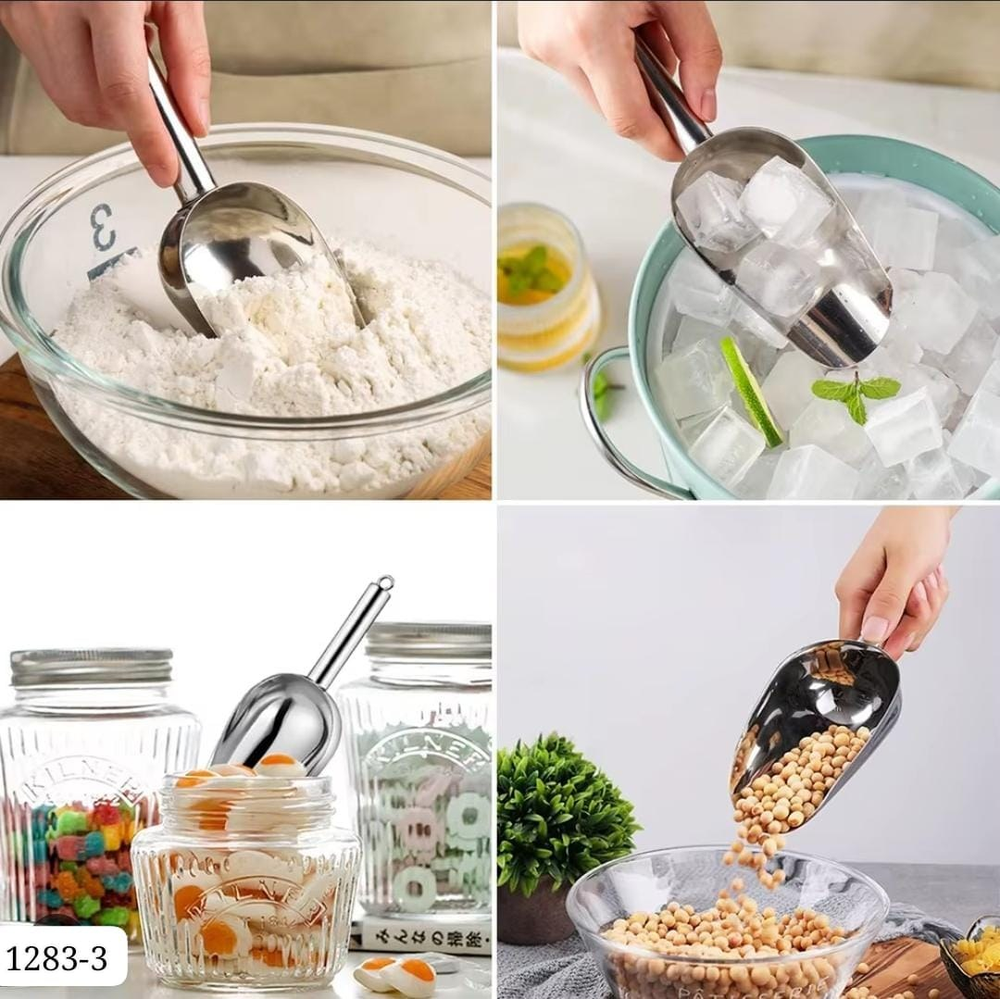
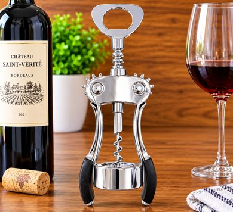
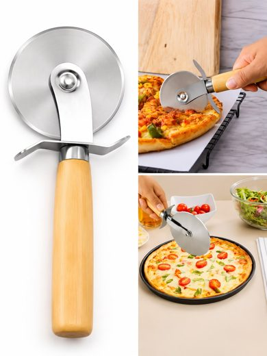
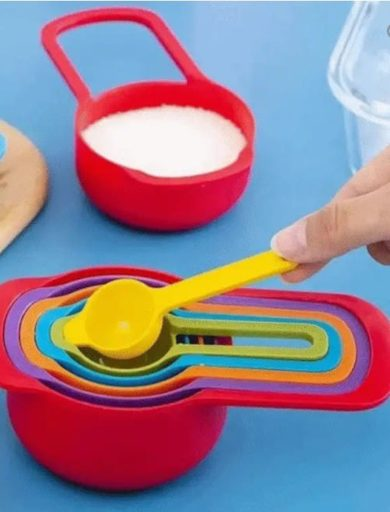
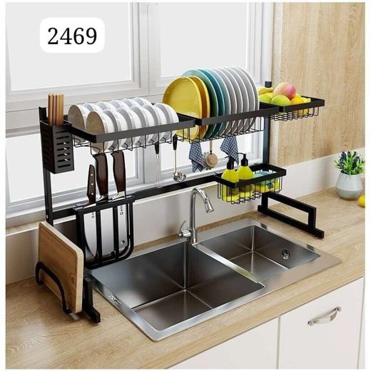

Stainless ice scoop, small (1283-3)
from KES 490 · 1 pc
Key features
- Polished stainless steel scoop for ice, flour, sugar, rice, beans, sweets and pet food
- Rust-free, easy to clean, hanging loop on the handle
- Great add-on to any order
| Specifications | |
|---|---|
| Sold as | 1 pc |
| Category | Dish racks & kitchen accessories |
| Type | Kitchen tools & gadgets |
| Condition | Brand new |
| Qty | 2 options |
| Product code | scoop-ice-small |
Pick your choice, then tap Order:
| Qty | Price |
|---|---|
| 1 pc | KES 490 |
| Any 2 | KES 890 |
Delivery in Nairobi and worldwide (at customer's cost). Pay by M-Pesa to 0114 308 114. Questions? WhatsApp or call 0114 308 114.
More dish racks & kitchen accessories

Wing wine opener (8806)KES 690

Pizza & dough cutter, bamboo handle (MJ-XH029)KES 390

Stainless lemon squeezer (767)KES 450

Rainbow measuring cups & spoons, 6pcsKES 450

Cake decorating nozzles & piping bag set, 8pcsKES 450

Above-sink dish rack 85cm (2469)KES 4,290

Above-sink dish rack 95cm (2470)KES 4,590

Glass measuring jugs, both sizesKES 2,390